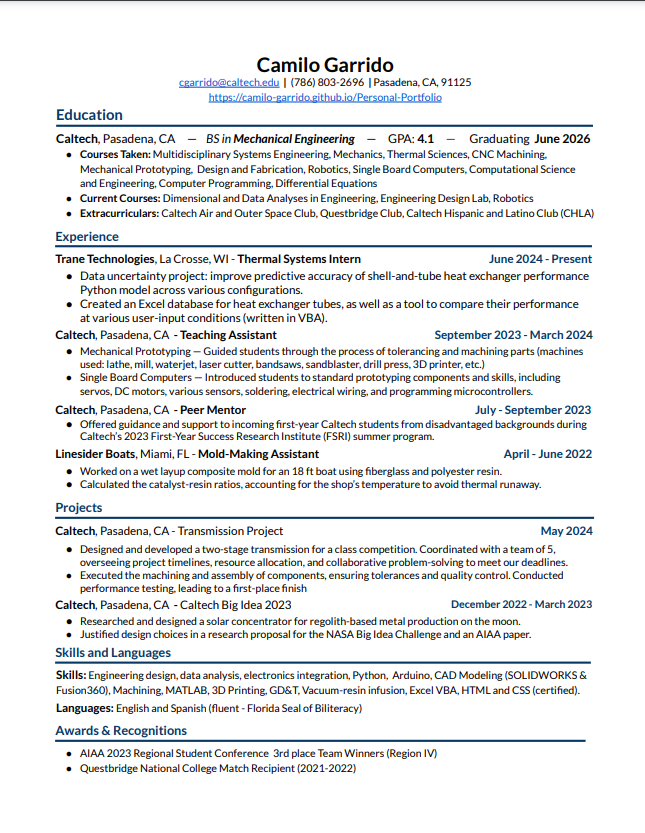

View my Resume
About Me
Hi there, and welcome to my website! My name is Camilo, I was born in Havana, Cuba, but raised in Miami, Florida, and now I'm entering my third year of studying mechanical engineering with a focus on robotics as an undergraduate at Caltech.
Ever since I was little, I've kept myself busy exploring new passions and learning through projects and hobbies, but I never had a place to share and reflect on these creations... until now! I have a big backlog of projects that I want to put on here, as well as some upcoming projects that I'm very excited to share! Occasionally I'll also sprinkle in some other fun highlights of my activities.
Please take a look around!
Projects
Transmission Project — ME 14 (Design and Fabrication)
I had the incredible opportunity to work on a two-stage transmission project with an amazing team as part of Caltech's Design and Fabrication class, which is a core requirement and, in many ways, a rite of passage for Mechanical Engineering students here. We were given a tight timeline and budget of around two weeks and $200 to design, build, and test our transmission. Transmissions were scored based on their maximum speed (in rpm) divided by the time taken for it to reach 250 rpm, and our team won!
This project was such an exceptional learning experience! It exercised everything from engineering design and communication, team building and coordination, performance prediction modeling, timeline management, machining (a lot of it), documentation, component/product specification, and so much more. I highly encourage you to check out my Engineering Notebook. Just hover over it with your mouse to get started. It goes into way more detail than I could ever cover on here! I can only hope future class projects will be as fun and rewarding as this one.
Here's a test run I recorded that shows our transmission running. The test rig it is mounted on has a sensor to measure the output rpm, but we weren't allowed to use it before the competition. However, we were still able to estimate our score by recording tests like this one in slo-mo, and then counting the number of revolutions of the bike wheel during a 5-10 second interval (real-time) to then extrapolate its rpm. These tests helped us realize that we needed to improve our second stage in order to win, and are just one of the ways that our team thought outside of the box!

Our team's celebratory picture with the class instructor, Professor Mello, after the class contest.
Rappeling Robot — ME 75 (Multidisciplinary Systems Engineering)
It's not often that a student-led class has the budget to allow students to buy state-of-the-art hardware to work on projects of their choosing. That's why this class was such a unique learning opportunity. I primarily took this chance to learn more about electronics and how to incorporate power considerations into engineering designs. My team's project idea was to make tethered robots that could cooperate to descend and ascend craters for exploration missions. I integrated our robot's computer, camera, motor, motor controller, and steering servo. I made the system hot-swappable so that it could be powered by our LiPo Batteries, or tested on a stand while connected to wall power. Along the way, I picked up useful skills such as soldering and a bit of ROS. Here's an electrical diagram with the key components of our robot so far:

We used a Traxxas Max as the base of our chassis, but replaced the electronics to better suit our needs. The Traxxas Maxx motor only had two pole-pairs so it was difficult to control precisely. We also custom-made the larger wheels to prevent the robot from bottoming-out, and added treads to reduce slippage on granular terrain. Here's a video of the our first integrated hardware test (note that this was before steering had been implemented). It's astonishing how much work it can take just to get a robot to this stage when working with novel hardware
Getting the robot steering was another big challenge. This was the first time I ever worked with ROS. We used it to communicate between a Logitech remote controller, our Jetson Orin Nano, the Traxxas' steering servo, and the microcontroller that controlled the servo. After dozens of hours of troubleshooting the steering system, and switching our microcontroller from a faulty RP2040 to the Teensy 4.0, my teammate and I finally got it to work! This is was one of the most satisfying and relieving moments of my academic career.
Despite all of the work my team and I have put in, this project is still a long way from completion. The tether-management system is practically in its infancy. I worked on a MATLAB script a while back to actively calculate the lengths of the tether segments between robots and the anchor winch. However, much of the hardware needed to start implementing this has yet to be developed. I hope to be able to continue this project throughout the year!
Ball-Tracking Camera — ME 8 (Intro to Robotics)
Through Caltech's introductory course on robotics, I learned about the fundamentals of smooth motor control and computer vision to make a gimbal robot that fluidly tracks the position of an object (a tennis ball in this particular case). Sadly I didn't save videos of the final robot actively tracking the ball, but below I have demonstrations of these functions independently — the gimbal moving smoothly and the camera vision identifying a tennis ball.
High School Robotics
I cannot overstate the role that my participation in the Mecha Makos Robotics Club at my high school played in enabling me to explore my passion for mechanical engineering. I would scour through robotics forums and youtube videos to learn how to improve our robots. I taught myself how to use 3D modeling software so that I could work on designs from home and quickly create drawings and renders for our engineering notebook. Then, my desire to improve our robots' autonomous programs for competitions motivated me to also learn how to code. Over the course of my four years, I easily put in a few-thousand hours into this club. Each robot was a massive project on its own. Collectively, they cemented my passion for robotics and catapulted my engineering skills to new heights.
This video radiates the excitement we felt as a team when our autonomous program worked against all odds! That's the power of robotics.

During the pandemic, I poured hundreds of hours into designing our robot in Fusion360. This is one of that robot's earliest iterations. Looking back, it was such a great use of all my extra time at home! I learned to make subsequent iterations progressively simpler, following the KISS design principle so that we would be able to quickly build this robot when we returned to in-person schooling. 3D modelling broke down the previous years' limitation of only being able to work on these robots for 2 hours a week during our regular club meetings. This skills helped me elevate our robots to new competitive heights!

I loved making cool renders of the designs! They really brought my ideas to life and helped me communicate them with others in a way that hand-drawn sketches (no matter how detailed they are) just can't.

I could even incorporate the game elements that would be on the field during competitions far before we were able to build our own field at school! This was great for getting a sense of the scale of these elements in relation to the robot.

This one was our final design that year! You'll see in the videos below that the hood would extend up to direct balls into the goal zones, but it started matches in this lowered position to meet size requirements.
I even created animations for our autonomous program plans!

Just imagine how happy I was when we went back to in-person schooling and I was finally able to build the robot that I'd spent months designing. It felt so surreal! Since the robot was fully CADed, I was able to give each team member a component to assemble. As a result, we built the robot and started testing it within a matter of days!
This was the first year that I took a lead designing role on my team, as well as a central role programming. Despite all of the hurdles that the pandemic through in the way, our team made one of the best-performing and most reliable robots in the club's history. Taking all of the skills I had developed throughout the year, I immediately got to work on building an even better, more ambitious robot for my senior year...


.png)
We stayed so true to the design this year that the resemblance between the final robot and the early CAD renderings is still uncanny to me. I also had more experience with coding so I helped make our autonomous programs better than ever — incorporating more PID control loops to achieve greater reliability. The results speak for themselves. We placed first in the bracket stage of a competition and qualified for the national and world championships with this robot — the first of our school-club's teams to do so in years. Just look at this thing go:
This Website
Building this website while learning HTML and CSS has been an exciting journey, full of a myriad of fun challenges. There are still so many features I envision adding to make it more interactive, details to enhance about my projects, and design aspects to refine. Yet, with other exciting projects on the horizon and a new school year approaching, I feel it's the perfect time to pause and reflect on how far I've come. I’m committed to periodically updating and maintaining this site during breaks. Creating a space like this to share and reflect on my work has been a long-time goal, and I'm incredibly proud to have finally made it a reality!
Personal
Art
In my spare time, I enjoy drawing, especially creating imaginative surreal drawings or more detailed sketches that explore interesting perspectives. These are a few of my works.


Outdoor Activities
Nothing beats going to the beach with friends and family! Actually, I love just about anything that involves being in or on the water, from kayaking to swimming pools to water parks.